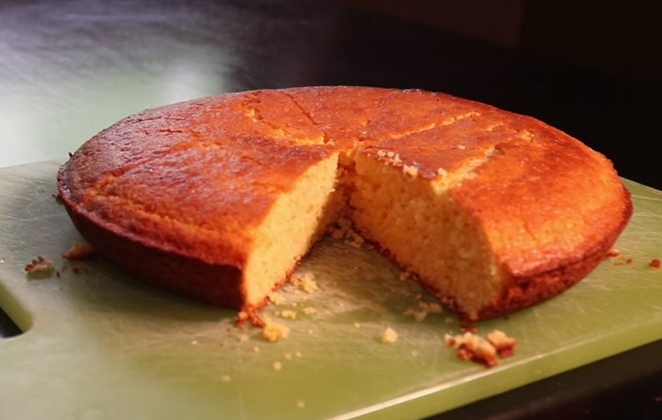

Adam Ragusea's Cornbread
Adam Ragusea is an American YouTuber who creates videos about food recipes, food science, and culinary culture. Until 2020, Ragusea was a professor of journalism at Mercer University. He has since gone on to create many food recipes on his self-titled youtube channel, mostly focusing on home-cook style dishes, as well as the occasional food science video that coincides with whatever he decides to film in the same week.
This is a recipe for cornbread, a cornmeal-bread amalgamation associated with the cuisine of the Southern United states.
Ingredients:
For the batter:
- 1 egg
- 1/3 cup vegetable oil
- 1 cup milk
- 3/4 cup sugar
- 3/4 teaspoon salt
- 1 heaped tablespoon baking powder
- 1 cup flour
- 1 cup cornmeal
For the pan:
- 1 tablespoon unsalted butter
Directions
- Place a heavy 10-inch nonstick skillet (or a well-seasoned cast iron skillet) in the oven and pre-heat to 400 F.
- Whisk together all the wet batter ingredients with the sugar until smooth. Whisk in the flour and corn meal until just smooth. Don't over-mix.
- When the oven and pan are hot, take out the pan and put in the butter. Swirl it until it's melted. Use a paper towel to smear butter around the edges and also to absorb any excess. Pour in the batter and return the pan to the oven.
- Bake 20-25 minutes, until a skewer comes out clean. Be careful not to over-bake. Let rest 5 minutes before turning out to cool on a wire rack.